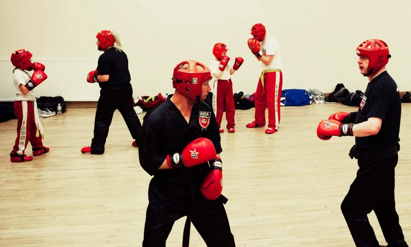

Kickboxing combines the punches of boxing with the kicks of karate. There are a few variations of the sport. Some competitive kickboxers practice the sport against opponents in the ring. Other fitness enthusiasts practice kickboxing as an aerobic workout. Kickboxing techniques are also practical for self defense. Over the past several decades, kickboxing has become an exciting sport to watch and to practice.
History
Karate has been practiced since the 19th century, but kickboxing has a much shorter history. The term “kickboxing” was created by a Japanese boxing promoter in the 1950s. The promoter used the term to refer to a combination of Muay Thai boxing and karate. The term later gained more popularity in the United States in the 1970s. American full-contact karate practitioners were frustrated by the scoring limitations of tournaments and decided to take their bouts to the boxing ring. A couple of the legends of the sport from that time are Benny “The Jet” Urquidez and Bill “Superfoot” Wallace. Kickboxing became more popular when ESPN started broadcasting matches in 1979.
Techniques
Competitive kickboxers use a wide a range of techniques to disorient and defeat opponents. Punches include the jab, uppercut and hook. The hook punch is one of the most devastating strikes because it swings around and powerfully hits an opponent from the side. Kicks also are powerful weapons in the sport. Kicking techniques include the front, hook, side, roundhouse and spinning back kicks. Spinning back kicks are good for surprising opponents. A kickboxer performs this technique by quickly spinning and driving his heel backward into his opponent.

Rules And Regulations
There are several organizations that promote and govern kickboxing matches. Rules can vary between organizations, but matches are typically between three and 12 rounds. Each round is usually two to three minutes long. Contestants wear protective fighting gear on their hands and feet. Some organizations allow kicks below the waist, but others restrict kicking techniques to above the waist. Kickboxing and boxing matches are decided in a similar manner. Opponents are divided by weight class and the outcome of a match is determined by a decision, draw or knockout.